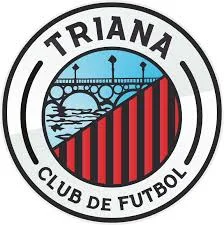
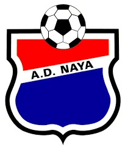
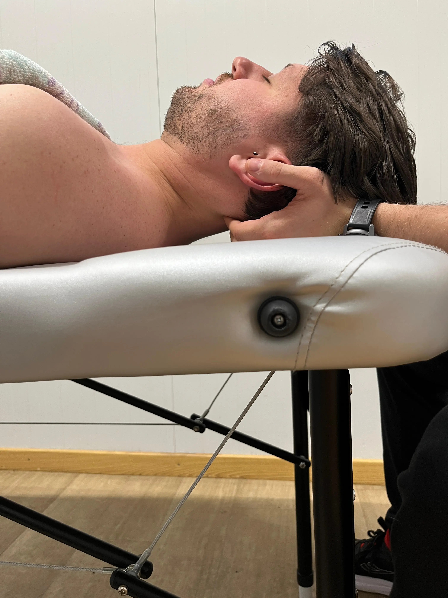
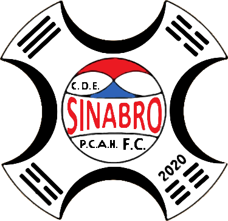

FISIOTERAPIA A DOMICILIO
Especializado en Fisioterapia Manual y Deportiva
"Cuídate y vive sin dolor"
VEN A CONOCERME
Desde siempre me ha apasionado el deporte y la salud, por lo que he enfocado mi profesión
en poder ayudar a las personas a conseguir una mejor calidad de vida sin dolor.
Mi objetivo es ofrecerte una atención individualizada, basada en una correcta valoración, un tratamiento eficaz y un seguimiento continuo adaptado a tus necesidades.
Si quieres prevenir o recuperarte de una lesión, además de poder mejorar tú rendimiento, estaré encantado de ayudarte.
- TÍTULO DE TÉCNICO SUPERIOR EN IMAGEN PARA EL DIAGNÓSTICO Y MEDICINA NUCLEAR - IES SAN ÁLVARO (CÓRDOBA)
- GRADUADO EN FISIOTERAPIA EN 2021 - UNIVERSIDAD DE SEVILLA
- MÁSTER UNIVERSITARIO EN FISIOTERAPIA MANUAL DEL APARATO LOCOMOTOR - UAH
- 80h de punción seca
- 60h de ecografía musculoesquelética
- 40h de electrolisis percutánea ecoguiada
- 20h de neuromodulación ecoguiada
- EXPERTO UNIVERSITARIO EN FISIOTERAPIA PARA LA PRÁCTICA DEPORTIVA - UCAM
- CURSO: TRATAMIENTO Y ABORDAJE DE LAS TENDINOPATÍAS EN MMII Y MMSS - QERES FORMACIÓN
- CURSO: PROGRAMA FORMATIVO DE ACTUALIZACIÓN EN EJERCICIO TERAPÉUTICO - CGCFE
- CURSO: ENFOQUE FISIOTERÁPICO EN EL DIAGNÓSTICO Y TRATAMIENTO DE LAS PATOLOGÍAS DE LA ATM - ICPFA
- CURSO UNIVERSITARIO DE ESPECIALIZACIÓN EN FISIOTERAPIA EN PROCESOS ONCOLÓGICOS - UEMC
- CURSO UNIVERSITARIO DE ESPECIALIZACIÓN EN REHABILITACIÓN Y FISIOTERAPIA EN GERIATRIA - UEMC
- CURSO UNIVERSITARIO DE ESPECIALIZACIÓN EN FISIOTERAPIA CARDIO-RESPIRATORIA - UEMC
- CURSO: PILATES TERAPÉUTICO - ICPFA
- CURSO THRUST´N GO - XAVI GREVOL
EXPERIENCIA PROFESIONAL

TRIANA CLUB DE FÚTBOL TEMPORADA 2021-2022

A.D. NAYA TEMP. 2023-ACTUALMENTE

ENCADENATE S.L. (TORREJÓN DE ARDOZ)
FISIOTERAPIA A DOMICILIO +3 AÑOS
TRATAMIENTOS
Haz click en las imágenes para saber más información sobre los tratamientos

TERAPIA MANUAL

PUNCIÓN SECA

ELECTROPUNCIÓN Y NEUROMODULACIÓN

EJERCICIO TERAPÉUTICO

FISIOTERAPIA DEPORTIVA
PATOLOGÍAS
A continuación, puedes ver imágenes reales de algunas de las patologías que trato habitualmente en mi día a día como Fisioterapeuta, entre muchas otras.

DOLOR DE ESPALDA

DISFUNCIONES MANDIBULARES (ATM)

DOLOR DE HOMBRO

LESIONES DEPORTIVAS

PATOLOGÍAS GERIÁTRICAS
¿Tienes dudas sobre si tu lesión se encuentra entre las que abordo?
Si no estás seguro de si tu dolencia se trata aquí, o si tienes cualquier pregunta no dudes en
escribirme. Estaré encantado de ayudarte y orientarte sin compromiso.
TARIFAS
¿Tienes dudas sobre qué tarifa se ajusta a ti?
Los precios pueden variar ligeramente según la zona, el número de personas o el tipo de
seguimiento.
Zonas diferentes a Torrejón o el Corredor del Henares (Alcalá de Henares, San Fernando, Coslada, Loeches, Mejorada Del Campo, Meco...) preguntar sin compromiso.
Fisioterapia a domicilio
Torrejón de Ardoz
🧍♂️ Individual: 45 €/sesión
🎫 Bono 5 sesiones*: 210 €
(42€/sesión)
👥 Bono 10 (compartido)*: 400 €
(40€/sesión)
Fisioterapia a domicilio
Corredor del Henares
🧍♂️ Individual: 50 €/sesión
🎫 Bono 5 sesiones*: 235 €
(47€/sesión)
👥 Bono 10 (compartido)*: 450 €
(45€/sesión)
Convenios y colaboraciones
🧍♂️ Individual: 35 €/sesión
🎫 Bono 5 sesiones*: 160 €
(32€/sesión)
Precio especial para miembros de:

Urgencias
📅 Sábados, domingos y festivos
❓
*El importe del bono se abona en su totalidad.
*Los bonos tienen una duración de 1 año desde la fecha de compra.
*Duración de la sesión de 1h aprox.
RESEÑAS
Opiniones reales de pacientes que han confiado en mí.
“Marcos es un profesional de 10, me ayudó a superar una lesión deportiva que me limitaba muchísimo y ahora me trata la sobrecarga muscular derivada de mi práctica deportiva de forma periódica. Cada vez que me atiende salgo como nuevo y aparte es muy cercano, profesional y cordial. Totalmente recomendable ”
— Chris
“Fenomenal, me trato durante varias sesiones y genial desde la primera. Recomendable 100%.”
— Juani Donoso Cubillo
CONTACTO
Si quieres más información sobre los tratamientos, o quieres que te ayude a mejorar tu calidad de vida, no dudes en ponerte en contacto conmigo.
Estaré encantado de atenderte.